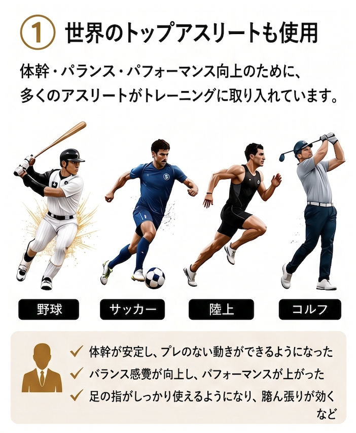
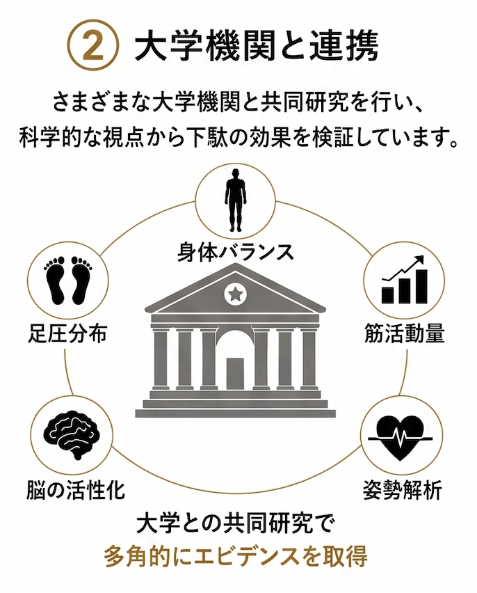

Research & Development
研究と開発

世界のトップアスリートも使用
野球・サッカー・陸上・ゴルフなど、ジャンルを問わず多くのトップアスリートがトレーニングに取り入れています。
体幹・バランス・パフォーマンスの向上に役立つ一本歯下駄は、競技力を高める新しいアプローチとして注目されています。

大学機関と連携
さまざまな大学機関との共同研究を行い、科学的な視点からその効果を検証しています。
身体バランスや足圧分布、筋活動量、姿勢解析など、多角的にエビデンスを取得しながら開発を進めています。

トライポッドフット 3点バランスに設計
母趾球・小趾球・かかとの3点「トライポッドフット」を最適に活性化できるよう設計しています。
この3点をバランスよく刺激することで、身体本来のバランスと能力を自然に引き出します。